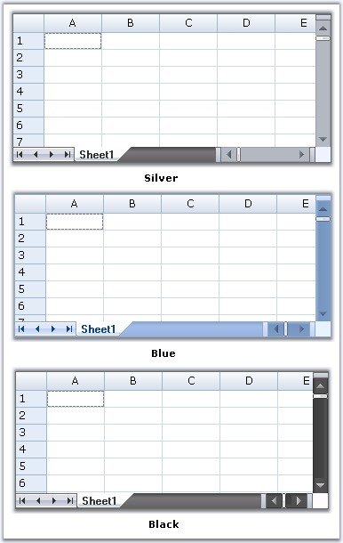
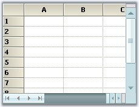

TabBarSplitterControl enables users to create Tab Pages with dynamic splitters; when used with a grid control, it gives a workbook like appearance. It comes with Office 2007 Style, by default, and supports all the three color schemes.
|
[C#]
this.tabBarSplitterControl.Style = Syncfusion.Windows.Forms.TabBarSplitterStyle.Office2007; this.tabBarSplitterControl.Office2007ColorScheme = Syncfusion.Windows.Forms.Office2007Theme.Silver; |
|
[VB.NET]
Me.tabBarSplitterControl.Style = Syncfusion.Windows.Forms.TabBarSplitterStyle.Office2007 Me.tabBarSplitterControl.Office2007ColorScheme = Syncfusion.Windows.Forms.Office2007Theme.Silver |

Figure 180: Office 2007 Color Schemes
Custom Colors
We can apply custom colors to the TabBarSplitterControl by setting Office2007ColorScheme property to "Managed" and by giving the color through ApplyManagedColor method as follows.
|
[C#]
this.tabBarSplitterControl.Office2007ColorScheme = Syncfusion.Windows.Forms.Office2007Theme.Managed; Office2007Colors.ApplyManagedColors(this, Color.PowderBlue); |
|
[VB.NET]
Me.tabBarSplitterControl.Office2007ColorScheme = Syncfusion.Windows.Forms.Office2007Theme.Managed Office2007Colors.ApplyManagedColors(Me, Color.PowderBlue) |

Figure 181: Custom Color of Tab Bar Splitter Control set to "PowderBlue"